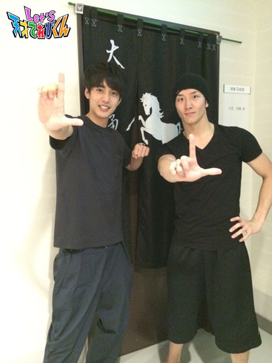

未来人
2015年07月01日 (水)21世紀調査活動情報！！［大野拓朗課長］
茶の間戦士諸君、久しぶりだな！ 大野課長だ！！
みんな聞いてくれ！！
今回、なんともうれしいことがあったから、みんなに自慢したくて・・・・・・
いやいや、お知らせしたくて、
このブログを書かせてもらうことにした。
実は、７月５日（日）、ほっともっとフィールド神戸にて、
オリックスｖｓソフトバンクの始球式を務めさせていただくことになったのだ！！！
ねえ、これすごすぎない？ すごいでしょ？
21世紀を知るために、俳優という仮の姿で活動してきた成果だ！
さすが私！！
ゴホン！
そこで、関西に住んでいる茶の間戦士諸君にお願いがあるんだ。
私の勇姿をぜひ球場まで応援しに来てほしい。
君たちのために、ズバッとカレーにひき肉を入れて
私の大好物であるキーマカレーを作っ・・・・・・じゃなかった。
ズバッと華麗（かれい）にストライクを入れるところを見てほしい！！
さあどんなオシャレをして行こうかな・・・・・・
あ、そうだ！ 野村靖さんに借りた着物を大切に持ってるから、
あれは子どもたちにも人気あったし、着物で出ちゃおうかな。
そしたら目立つぞー！！
うーん、でもいつもの私の一張羅（いっちょうら）も気に入ってるから
捨てがたいなあ・・・・・・・・・・・・
どうしよーーーー！！！
当日までワクワクしながら考えよっと。
それでは、君たちの声援を待っている！
レッツ、ほっともっとフィールド神戸！！！
投稿者:大野拓朗課長 | 投稿時間:18時55分 | 固定リンク
2015年02月06日 (金)21世紀調査報告書［大野拓朗課長］
やあ！茶の間戦士のみんな！元気にしているか？
インフルエンザが流行っているが、
勇敢な茶の間戦士である諸君は、ウイルスなんかに負けたりしないだろうな！
「 この前、課長は風邪をひいていたじゃないか！」 なんてツッコミは、ナシだ。
実はこのあいだ、東京の東の方で、あるドラマのロケに参加した。
もちろん、世を忍ぶ仮の姿である俳優の大野拓朗としてだ！
そのとき、江東区立八名川小学校の茶の間戦士たちが、私の応援に駆けつけてくれたのだ！！

私は嬉しくて嬉しくて、思わず泣き出しそうになり、
でもそれに耐えつて、みんなと熱く抱き合い、肩を組んで歌を歌い、
第5やたがらす丸に一緒に連れて帰りたかったのだが、
そういうわけにもいかないから我慢した……(泣)
いつかは、みんなの町にもひょっこり現れるかもしれないぞ！
そのときは、温かく迎えてくれ！
この間は私が身体を鍛えるために通っているキックボクシングのジムでも、
茶の間戦士たちと会ったんだ！！

みんな、本当にいつも応援ありがとな！！
異次元獣との戦いはまだまだ続くが、これからも力を貸してくれ！
合言葉はいつも、「 Let's！」 だ！
Let's！！！！！
投稿者:大野拓朗課長 | 投稿時間:18時45分 | 固定リンク
2014年09月26日 (金)祝・異次元獣撃退！ITAISEN活動報告[大野拓朗課長]
茶の間戦士のみんな、ありがとう！
2014年9月25日、次元の壁を破って大阪に侵入したスプーンの異次元獣を、私たちは撃退することができた。
「大阪スプーン事件」をついに防いだのだ！
これで未来は変わった！
22世紀の地球は穴ぼこだらけになることも、
人類が地球を捨てて宇宙に移住することも、
宇宙船のチケットを奪い合って人々がみにくい争いを繰り広げることも、
すべてなくなったのだ！！！
関西の出張茶の間戦士と、全国の茶の間戦士のみんな、
てれび戦士諸君と虎南分析官、そして私、大野課長の活躍のおかげだ！
おめでとう！そしてありがとう！！君たちのことを誇りに思うぞ。
さて、私たちの活躍によって未来がどう変わったか、22世紀の麿長官に連絡を取ってみた。
すると！
なんと麿長官はのんきにプリンを食べているじゃないか！
しかも！坂田社長が開発した、あのダンベルスプーンを使ってだ。
地球はまん丸で平和そのもの、移住計画など影も形もなさそうだ。
そもそも「大阪スプーン事件」が存在したこともまったく知らない様子だった！
せっかく異次元獣を倒したのだからもっとほめてくれてもいいのに張り合いがないが、
麿長官がいる未来では、スプーンの異次元獣が暴れまわったという事実は無いのだ！
みんな喜んでくれ！これぞ地球が救われた証拠だ。
坂田社長のスプーンが流行すること以外の未来は変わったのだ。
あ、あともう一つ変わっていたことがあった。
それは君たち自身の目で確かめてほしい。
今度映像を公開する予定だ。
それでは喜びをこめて、レッツ！！ また会おう。
投稿者:大野拓朗課長 | 投稿時間:18時54分 | 固定リンク
2014年09月09日 (火)21世紀調査報告書その7［大野拓朗課長］
「みんな、待たせたな！！！」
22世紀から……
21世紀に……
帰って……
キターーーーー！！！！！
うぅ。。。
みんな、心配をかけてすまなかった。。。
私がいないことで、さみしくて眠れない夜を過ごしていたことと思う。
暑くて暑くてしかたがなくて、外に出て遊ぶのが嫌になるような夏を過ごしていたと思う。
雨が多くて、ゆううつな夏を過ごしていたと思う。
しかし！プールや海に行って、冷たくて気持ちの良い夏を過ごしていたと思う！！
私はというと
22世紀にいても、てれび戦士や茶の間戦士諸君のことを忘れたときなど、一瞬たりともない。
来る日も来る日も、ずっとみんなのことを考えていた。
もちろん、あのにっくきスプーンの異次元獣のことも。
そこで私は、異次元獣を倒すため、身体を鍛えていた！！！
ものすごく重いものを持っての筋トレ。
そして、走り込み。
決死の思いで自分と戦ってきた。
どうだ、このボディビルポーズ！！

異次元獣を倒すため、バージョンアップして21世紀に帰ってきたぞ！！！
この私のマッスルパワーで、異次元獣などちょちょいのちょいだ！！！
わはははははーーーー！！！
…………。
で、でもちょっと待ってくれ。
一応だな、どちゃもんは、もっとたくさん仲間にする。
生身の人間には異次元獣を直接攻撃することはできない。
それができるのはどちゃもんたちだけなのだ。
私はけ、けけ、決して異次元獣が恐いわけではないぞ！！！
………ゴホン。
まあ、とにかく！！
茶の間戦士諸君も、今まで通り力を貸してくれ。
異次元獣との決戦に備えて、どちゃもんを仲間にするお手伝いをしてくれ。
そして異次元獣との決戦のときは、みんなの力を大阪に集めるんだ！！！
よろしく頼んだぞ。
さて。
21世紀にも帰ってきたことだし、
前から、ずっと気になっていた「カラオケ」というシステムを体験してみた。
もちろん、目立たないよう21世紀の衣装を着て行動した。
いやー、マイクを通して大きな声で歌うってのは、気持ちのいいもんだな！！

私の調査によるところの、21世紀でいちばん流行っている曲をおぼえたぞ。
君たちにも聞かせてあげたいなー。
いつか機会があったら、ぜひとも聞かせてあげよう！！
楽しみにしていてくれ。
それでは、新たなどちゃもんの調査と、
カラオケの練習をしなければならないから、今日はここまで。
さっきも言ったが、茶の間戦士諸君、これからもよろしくな。
ともに戦おう！！
Let's！！
またねー！！
投稿者:大野拓朗課長 | 投稿時間:18時45分 | 固定リンク
2014年08月25日 (月)21世紀調査報告書その6［大野拓朗課長］
茶の間戦士諸君、いかがお過ごしかな？
夏休みも、もうあと1週間くらいか。
夏休みは、満喫できたか！？
ずっと宿題サボってて、残りは遊べずに宿題漬けの毎日、
なんてことにはなっていないだろうな！？
夏休みは、1年に1度しか来ない。
そして、今の君の学年、年齢での夏休みは今年で最後。
つまり、ある意味人生で1度しかない夏休みなんだ。
同じ夏は、2度と来ない。
悔いのないよう、残りの夏を楽しむんだ！！
さて。私はというと、
夏休みが終わるととにかく忙しくなってしまうのだ。
ITAISENの課長は、
春夏秋冬関係なくずっと忙しいのだが、今回は、特別。
みんなも知っての通り、22世紀の人類は、別の星にお引っ越しせねばならない。
そう、異次元獣の脅威から逃れるための移住計画だ。
そのために、世界中の人々をまとめたり、手続きをしたりと大忙しになる。
だから、本当に本当に本当に名残惜しいのだが、
この手紙をもって、君たちへの通信は終わりとなる。
また、お引っ越しが終わって落ち着いたら
別の星から21世紀の君たちへお手紙を書こうと思う。
21世紀の地球はまだ存続しているからな。
みんな、元気でいてくれよ。
私は大丈夫だ。
今にも泣き出してしまいそうだが
必ず、別の星でも大阪に現れるスプーンの異次元獣のことを
たくさんたくさん研究して、21世紀の地球を救いに戻ってくるからな。
だから、安心して1日1日を大切に
家族、お友達、学校の先生、
君たちのまわりにいる君たちを支えてくれている
すべての人、ものを大切に
楽しく過ごすんだぞ。
少しセンチメンタルになってしまったかな……。
…………。
やっぱりだめだ。
我慢できない。
私はとっても寂しい！！！
別の星に行きたくないよーーー
みんなと離れたくないよーーー
スプーンの異次元獣のばかやろーーー！！！
ときには、自分の感情を吐き出すことも大切なんだ！！
そして、この涙を私は決して忘れない！！！
この悔しさを糧(かて)に
必ず、スプーンの異次元獣の弱点を見つけ出してやる！！！！！
君たちもその日を待っていてくれ！！
さあ、このままでは涙の別れになってしまう。
湿っぽい(しめっぽい)別れは苦手なのだ。
最後に楽しい話をしようではないか！！
21世紀にいた頃、日本だけでなく世界中の調査をするため、
仮の姿「俳優・大野拓朗」として、
あるテレビ番組に出演させてもらっていた。
今日の写真は、21世紀のスタッフさんたちとお花見をしたときのものだ。

この番組は、ものすごく楽しくてな
外国の山奥の人が少ない村とかに
なぜか、日本人が1人で住んでいるのだ！！
なぜ、こんなところに！！
その人の元へ、21世紀の偉大な俳優さんたちがたずねて行くのだが、
その人の生い立ちや、その村での生活など、
いろんなお話を聞くことができて、
人生の勉強になるんだ。
さらに、外国ってこういうところなんだと知ることができる。
お湯が出ないから毎日水でシャワーを浴びるとか、
水すら出ないからバケツを持って遠くまで行かなくちゃいけなかったり、
トイレが家の中になくて離れたところにあるから、
夜とかは暗い中、怖いけど頑張ってトイレまで歩いて行かなくちゃいけなかったり、
いろんな大変なことがあるということを知ることができて、
自分がどれだけ恵まれた環境にいるのか、
ぜいたくしたり、わがまま言っちゃいけないなと思えるんだ。
観たら、将来の夢が変わるかもしれないな。
いろんな外国のおいしいものを食べたり、
いろんな外国のまずいものを食べたり(笑)、
いろんな外国の乗り物に乗ったり、
いろんな外国の人と話したり、
日本人に会うまでの道のりもすごくおもしろい。
ああ、そろそろ移住計画のしごとに戻らなければ。
なごりおしいが、楽しい話もこれで終わりだ。
茶の間戦士諸君、元気でな。
必ず、また会おう！！！
Let's、再会！！！
投稿者:大野拓朗課長 | 投稿時間:18時45分 | 固定リンク
2014年08月18日 (月)21世紀調査報告書その5［大野拓朗課長］
ごきげんよう、茶の間戦士諸君。
夏休みも、もうあと少しになってしまったな。
夏を謳歌(おうか)しているか？
私はだな、相変わらず忙しいのだが
時間をみつけては筋トレをしている。
何度も言うようだが
ITAISENの課長というのは、本当に本当に本当に忙しいのだ。
しかし、仕事ばかりしていては疲れがたまってしまう。
ときには運動をして気分転換をすることが、仕事がはかどるコツなんだ。
諸君も、宿題や勉強をするのは大変素晴らしいことだが
同じくらい外でもたくさん遊んでくれ！！
あ、あと、これも気分転換のひとつとして
この間、未来カーを見に行ってきたぞ。
私は車が大好きなんだ！！！
運転するのも好き、見るのも好き。
だから、すごく幸せな時間だった。
大興奮(だいこうふん)してしまった！！！
ん？未来の車はどんなかって？
それはだな……
教えてはいけないと、未来法で決まっているのだ。
茶の間戦士の諸君すまない。
これを教えてしまうと
21世紀にも未来のハイテクノロジーカーがあふれてしまって
大変なことになってしまうのだ。
いやー、でも教えたいなー。
でもなー、怒られるしなー。
うーん…でも、みんなに「すごい！」って、ほめられたいしなー。
でもな、でもなー。
空にも道路ができて飛んで移動したり、
行き先を入力すると勝手に車自身が運転してくれて目的地に届けてくれたり、
ボタンを押すと大きさが変わって、たくさん人が乗れるようになったり、
変身して悪いやつらと戦ってくれたり、
ほかにもいろんな楽しい機能がついてるなんて教えられないしなー。
うーん……。
……………
……え、なに！？聞こえちゃった！？
………
……………
あ、いや、ちゃ、茶の間戦士諸君、そそそんなことは、決してないからな！！！
車が生き物のようにしゃべって友達になれたりなんか、絶対にしないからな！！！
ふう、危なかった……。
君たちの中に、未来の車を作り出す子が現れるかもしれないからな。
今のうちに、未来のみんなを楽しくさせてくれる車を考えといてくれ。
それでは、残りの夏休み、ラストスパートで楽しんで！！
またな！Let's！！！
投稿者:大野拓朗課長 | 投稿時間:18時45分 | 固定リンク
2014年08月11日 (月)21世紀調査報告書その4［大野拓朗課長］
ババンババンバンバン
「歯磨けよ！」
ババンババンバンバン
「宿題やれよ！」
ババンババンバンバン
「夜更かしするなよ！」
ババンババンバンバン
「飯いっぱい食えよ！」
ババンババンバンバン
「たくさん外で遊べよ！」
ババンババンバンバン
「私のこと忘れるなよ！」
ということで。
2014年にいた頃、少し時間があったので、
21世紀の自然環境を研究しようとある場所へ行ってきた。

世田谷区(せたがやく)の等々力(とどろき)にある等々力渓谷(けいこく)というところだ。
ここは、東京23区の中にあるたったひとつの渓谷なんだ。
うーむ、すごいパワーを感じたぞ。
セミの声、鳥のさえずり、川のせせらぎ。
そして、空気がとても澄んで(すんで)いて
場所によって、温度も、匂いも、感じる空気も違う。
もしや！
東京都のどちゃもんは、この神聖な場所にいるのではないか……
むむむ………！！
茶の間戦士諸君！！
私は、もう22世紀で忙しいので、
もし等々力渓谷に行く機会があったら、
どちゃもんの気配を探りながら探索してみてくれ！！
頼んだぞ。
あ、あと、等々力渓谷に行った際には、
汗をいっぱいかくから
帰りにアイスを食べるとおいしいぞ！！

私もひとりで食べてきたぞー！！
わははー！！！
いやあ、それにしても。
私が小さい頃は、夏休みにはよく、
海に遊びに行ったり、キャンプして川で遊んだり、山登りしたりしたなあ。
キャンプのときのバーベキューが格別にうまいんだ！！
みんなは、夏休みにどこかへ出掛けるのかな？
ぜひとも、夏休みを満喫(まんきつ)してくれたまえ！！
それでは、また会う日まで！！
Let'sエンジョイ夏休み！！
投稿者:大野拓朗課長 | 投稿時間:19時56分 | 固定リンク
2014年08月04日 (月)21世紀調査報告書その3［大野拓朗課長］
やあ、茶の間戦士諸君。
夏バテしてないか！？
私と会えないことに加え、夏の強烈な日差しの前には、
いくら優秀な茶の間戦士諸君といえどもへばってしまうことだろう。
これからまたどんどん暑くなるけど、
たくさん食べて、たくさんお水を飲んで、たくさん外で遊んで、
夏の太陽に打ち勝って行こうではないか！！
あ、たくさん食べると言えば。
みんなは好き嫌いとかしてないかな？
ピーマンとかニンジンとかシイタケとか。
私は好き嫌いなどせずになんでも食べていたぞ。………と言いたいところなのだが、
実は、小さい頃から、ハチミツだけは大の苦手だったんだ。
食べると気分が悪くなってしまっていた。
しかーーーーし！！！
この私にかかればハチミツくらいどうってことないのだ！！！！
喉（のど）に良いし、風邪も引きづらくなると聞いて、
頑張って食べていたら、今や私の大好物になった！！！！
どうだ？さすがだろう？わははははーーー
ここで1つ、君たちにも嫌いな食べ物を克服する方法を教えよう。
ピーマンやニンジン、シイタケにも、たっくさんの栄養があるのだ。
その栄養がないと、私みたいに身体が大きくなれないし、夏の太陽にも負けてしまう。
今、てれび戦士たちは、私たち未来人がいない中で、
異次元獣を倒そうと必死に頑張っている。
だから君たちも、好き嫌いせずになんでもたくさん食べて、
パワーをつけて、てれび戦士たちをサポートしてやってほしい。
君たちの力で、地球を異次元獣から救うのだ。
地球を守るためだと思えば、嫌いなものでも食べられるだろう？
茶の間戦士のみんな、よろしく頼んだぞ。
さて。
今日も、２０１４年にいる時に行った「Let'sの輪を広めよう」キャンペーンについて、
その結果を報告する。
まずは「週刊ヤングマガジン」という
日本で有名な、すごく面白い漫画雑誌の編集をしている、伊東さんだ。

この日は21世紀の正装、スーツというものを着てみたぞ！
伊東さんには、すごく可愛がってもらっていて、
いつも美味しいものを一緒に食べに行っているんだ。
どうだ、私のようにかっこいいだろう？
ん？
伊東さんは、かっこいいけど課長は別に？
………うるさい、うるさいっ！！！
さ、続いては、僕の大好きな21世紀のアーティスト、ET-KINGの皆さんだ。

22世紀でもリバイバルで大流行しており、
21世紀に来たときにご本人たちに会えて、
さらに仲良くしてもらえて、最高に幸せなんだ。
あったかくて、歌詞も素敵なので、みんなにもぜひ聞いてもらいたい。
お次は、この写真！！

おっと！間違えた！！！
いやあ、口紅異次元獣のときの、
口裂けメイクブームには、私も恥ずかしい思いをさせられたなあ。
あのときの虎南分析官や子どもたちの視線が怖かった………。
見せたかったのは、こっちの写真だ。

俳優の大貫勇輔くんだ。
俳優の大野拓朗という、私の仮の姿での活動において、仲良しであり良きライバルでもある。
今、ピーターパンというミュージカルで、フック船長をやっている。
クルクル回ったり踊ったりするおちゃめなフック船長、かっこよかったぞー。
ピーターパンは、22世紀でも子どもたちに広く親しまれている作品だ。
私も大好きで、小学生のとき風邪で学校を休んだ日には映画版を必ず観ていたほどだ。
ミュージカルのピーターパンも、感動したし、かっこよかったし、笑えたし、
すごく楽しく、素晴らしい世界だった。
東京での公演はもう終わってしまったが、地方での公演はまだあるみたいだ！
興味のある茶の間戦士諸君は、ぜひ調査に行ってみてくれ！！
最後に、私たちITAISENの活動を放送してくれている、NHK天てれチームの皆さんだ。
どちゃもんの情報を入手してきてくれたり、
異次元獣の脅威を報告してくれたり、
茶の間戦士諸君と私たちを繋いでくれたり、
重要な仕事をしてくださっている皆さんなんだ。
この人たちなくして地球を守ることはできない。
そしていつもいつも、私の優秀なところを
世界中に放送してくれていることに、感謝しているぞ。
(……それにしても、課長役立たずという声をよく聞くのはなぜだろう。。。)
とにかく！
私を21世紀の茶の間戦士諸君と出会わせてくれた皆さんに、感謝の気持ちでいっぱいだ。
さあ！茶の間戦士諸君。
改めて言うが、来たる異次元獣との決戦にそなえて、
たくさん食べて、パワーをつけておいてくれ！！！

行くぞ！フック！！！
って、ちがう！勇輔ちがう！！
Let'sだあ！！！！
投稿者:大野拓朗課長 | 投稿時間:18時45分 | 固定リンク
2014年07月28日 (月)21世紀調査報告書その2［大野拓朗課長］
茶の間戦士諸君、待たせたな。
君たちのために、またお手紙を書いてるぞ！
まあまあ、そう寂しがるんじゃない。
私たちの上には、おっきな空が広がってる。
私たちはみんな、そのおっきな空でつながってるんだから。
(…………あ、私は22世紀にいるから同じ空の下にはいないんだ。。)
おおっと！心の声がもれてしまった！！
あ、いやいやいや、これならどうだ！
空ではつながっていなくとも、君たちが私のことを思い出してくれたとき、
そのとき私は、君たちの「心の中」にいるんだ。
どうだ？そう思うと心強いだろう！！
夏休みの宿題も頑張れちゃうぞ！！
ところで、21世紀にはどんな夏休みの宿題があるんだろう。
なにか面白い宿題とかあるのかな？
私が小学生だったのは21世紀の終わり頃だが、
読書感想文や、ハミガキカレンダー・自由研究などがあった。
そうそう、自由研究好きだったなー
私は昔から物を作ったりすることが得意だったから、毎年工作をしていた。
木でおっきなイスなんかも作ったもんだ。
学校まで持って行くのが大変だったよ(笑)
君たちは、何をする？私にテレパシーで教えてくれ！
さて、21世紀の調査報告だ。
実は2014年にいたとき、Let'sの輪を広げるために山口県に出張をしたんだ。
そのときの調査写真をみんなにも見せてあげよう。
もちろんITAISENの課長であることは隠して、
俳優の大野拓朗という仮の姿で行動していたのだが、
たくさんの人に声を掛けていただいた。
お忍びで行動していても、やはり気付いてもらえるというのは嬉しいものだな。


さらに、NHK山口の皆さんにも会ってきたぞ！

異次元獣に気を付けるよう、そしてどちゃもんの情報が入ったら、
すぐに報告してもらうようお願いしてきた。
どうだ！みんな素敵な笑顔だろう。
Let'sには、こんな力もあるんだな。
さあ、茶の間戦士のみんなも力を貸してくれ。
Let'sの輪を広げて行こうじゃないか！
行くぞ！！Let's！！
また会おう！！
投稿者:大野拓朗課長 | 投稿時間:18時45分 | 固定リンク
2014年07月21日 (月)21世紀調査報告書その1［大野拓朗課長］
茶の間戦士諸君、久しぶりだな。
私が未来に帰ってしまったことで、君たちが寂しそうにしていると思うと、実に胸が苦しい。
え？
なに？
寂しくない？
……………。
…………………。 ………ゴホン。
えー、寂しがっている場合ではない。ＩＴＡＩＳＥＮの課長は忙しいのだ。
22世紀の地球に状況に関する調査は急務だが、
21世紀についての調査も合わせて進めなければならない。
そこで、俳優として活動することで正体を隠し、21世紀の調査を行うことにした。
どうしてそんなことができるかって？ 特殊な交渉術を用いたのだ。
幸運なことに日本で大人気の「大河ドラマ」なるものに出演させていただけることとなった。
お題は「花燃ゆ」。「どちゃもん」と同じイントネーションで読むのが正しい発音らしい。
今回の大河ドラマは、日本の幕末から明治という時代の話らしい。
22世紀から、21世紀、そしてさらに19世紀へと過去に遡(さかのぼ)るんだ。
記者会見というものも体験させていただいたが、
てれび戦士諸君の記者発表に乗り込んだときとはワケが違う。
そうそうたる共演者の方々に囲まれ、さすがの私も武者震いを隠せなかった。

私が演じるのは、
吉田松陰先生が教える、
松下村塾(しょうかそんじゅく)という私塾の塾生「野村靖(のむらやすし)」。
1842年に生まれ、68歳まで生きた偉人の一人だ。
小さい頃は「野村和作(のむらわさく)」という名前だったらしい。
子どもの頃と大人になってからと、名前が変わるというのは実に不思議だ。
さらに野村靖について調査したところ、生涯を通して吉田松陰先生に忠実で、
兄「入江九一」を始め家族を大変愛し、大切にしていて、幕末を生き残る。
そして明治の世では内閣に入り、第2次伊藤博文内閣で内務大臣、
さらに神奈川県令(今で言う神奈川県知事)になって、日本のために働いたということだ。
野村靖34歳のときには、
吉田松陰先生の遺書である「留魂録(りゅうこんろく)」を受け取るという大役もあるから、
10代から30代以降まで、幅広い年齢で演じることになると思われる。
実に楽しみだ！
今回、大河のチーフプロデューサー土屋さんに、
野村靖は貧乏だったからガリガリに痩せた方が良いのか、
それともかっこよく身体を鍛えておいた方が良いのかを相談したところ、
ベストオブ大野課長で臨んでくれという指令が下った。
松下村塾のメンバーを青春イケメン祭りにするらしい。
ということで、ただいま絶賛筋トレ中だ！
寂しさも紛れていいぞー！このままだと異次元獣も私の力だけで倒せてしまうかもな！
ふっふっふ、はっはっはっはっはーーー！！
22世紀には宇宙人や異次元獣などはいるが、この大河の時代には存在するのか。
はたまた別の未知なる生物が存在するのか。
実際にこの時代を生きることで、有益な情報を得ることができたらなと思う。
茶の間戦士の諸君も、一緒に「花燃ゆ」を見ながら、この時代のことを調査してくれたまえ。
それでは、また会う日まで。
Let's 調査だ！！！
投稿者:大野拓朗課長 | 投稿時間:18時45分 | 固定リンク
ページの一番上へ▲